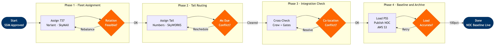

Fleet Assignment & Tail Routing
Network and Pricing › Schedule Planning · 11 L4 steps · 4 phases · 4 decision gates
📊
Process Flow Diagram (BPMN)

📋
L4 Process Steps
| Step | Step Name | Role / Swim Lane | System | Input | Output | KPI | Dec? | Exc? |
|---|---|---|---|---|---|---|---|---|
Phase 1 · Fleet Assignment 1.1 |
Assign aircraft variant to each route | Fleet Planning Analyst | Amadeus SkyMAX | Approved seasonal schedule; Fleet inventory | Aircraft-type assignment matrix by route | Seat capacity match %; Variant utilization balance | Y | N |
| 1.2 | Optimize aircraft rotations to minimize ferry flights | Fleet Planning Analyst | SkyMAX + SkyWORKS | Aircraft-type matrix; Station demand data | Optimized rotation plan | Ferry flight count (target <5/day); Utilization % | Y | Y |
| 1.3 | Build aircraft overnight station balance | Fleet Planning Analyst | Amadeus SkyMAX | Rotation plan; Next-day departure schedule | Station balance report: aircraft count per airport | Balance vs demand variance %; Zero-aircraft risk | Y | Y |
Phase 2 · Tail Routing 2.1 |
Assign specific tail numbers to flight sequences | Scheduling Ops | SkyWORKS + Custom tail routing tool | Optimized rotation plan; Fleet Mx due-date register | Tail routing plan: N-number per flight leg | Tail utilization hours (target within 5% avg) | Y | Y |
| 2.2 | Validate each tail maintenance due dates | MRO Planner | Custom MRO system (API to SkyWORKS) | Tail routing plan; Aircraft Mx tracking | Maintenance-cleared tail routing plan | % tails with Mx window protected; Hard-time exceedances | Y | Y |
| 2.3 | Pre-position reserve aircraft by region | Fleet Planning Analyst | SkyMAX + Disruption history heat map | Finalized tail routing; Historical disruption data | Reserve positioning plan at focus cities | Reserve coverage ratio (target ≥1 per 50 tails) | Y | N |
Phase 3 · Integration Check 3.1 |
Cross-check tail routing against crew pairing plan | Crew Planning Manager | Crew mgmt system + SkyWORKS | Tail routing plan; Crew pairing schedule | Conflict-free integrated aircraft + crew plan | Crew-aircraft co-location conflict rate (target 0) | Y | Y |
| 3.2 | Validate overnight gate/stand availability | Airport Relations / Station Ops | Station ops DB + Gate management system | Overnight balance plan; Gate lease agreements | Gate-validated overnight positioning plan | Gate conflict count (target 0) | Y | N |
Phase 4 · Baseline & Archive 4.1 |
Load finalized tail routing into PSS | IT / Scheduling Ops | Altéa PSS + SkyWORKS API | Approved tail routing plan | Live tail assignments visible in PSS | Data load accuracy % (target 100%); Load time | N | Y |
| 4.2 | Publish tail routing baseline to NOC | Scheduling Ops / NOC Team | NOC console + AI cancellation tool | PSS-confirmed tail plan | NOC operational baseline: aircraft positions | NOC baseline accuracy vs actual ops at T-24hrs | N | N |
| 4.3 | Archive integrated plan to data lake | IT / Data Engineering | AWS S3 + real-time streaming pipeline | Approved tail + crew integrated plan | Immutable archived baseline in data lake | Archive latency (target <15 min); Retrieval <30 sec | N | N |
🗃